El usuario interactúa con el Frontend (Svelte) e introduce sus credenciales. Estas se envían al servicio de autenticación.
El servicio de autenticación verifica la identidad y devuelve al Frontend un token JWT. Dentro de la de este token, va el rol del usuario.
Para cargar los datos, el Frontend hace peticiones Backend adjuntando el JWT en las cabeceras HTTP .
El Backend verifica el token, extrae el rol. Si el rol tiene los permisos adecuados, autoriza la operación y devuelve la información en formato JSON (200 OK). Si no tiene permisos para esa acción, rechaza la petición (403 Forbidden).
Autenticación no humano:
Credenciales externas / Token de acceso temporal (Comunicación Machine-to-Machine).
Para descargar los pesados ficheros de datos meteorológicos (ZIP), necesita acceder a la API externa de Copernicus Hub.
El script ETL realiza una petición inicial a la API externa proporcionando sus propias credenciales o API Key.
Copernicus Hub valida la solicitud y devuelve un Token temporal. El ETL inyecta este Token en las cabeceras de sus peticiones HTTP posteriores para autorizar la descarga continua de los ficheros ZIP.
La descarga y procesamiento de grandes volúmenes de datos puede ser un proceso prolongado, el proceso ETL está diseñado para monitorizar el tiempo de vida de este token y gestionar su renovación de forma transparente, evitando así cortes de conexión o respuestas.
TAREA 3 — TRAZA HTTP REAL (POSTMAN)
GET 200
Al pedir la información de /pokemon/pikachu, el servidor la encuentra y nos responde con un código 200 OK, entregándonos los datos solicitados.
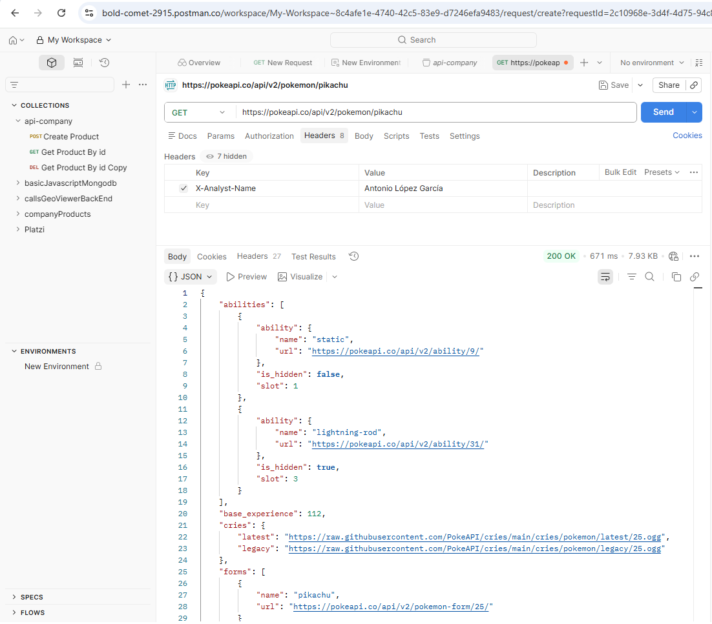
Esto demuestra una comunicación correcta entre quien pide la información (el cliente) y quien la tiene (el servidor). Si llevamos este ejemplo a DataSphere, esta es la respuesta que queremos ver cuando nuestro sistema consulta datos del clima a un proveedor externo.
Significa que el proveedor ha entendido la petición y nos envía la información (como predicciones o coordenadas) para que podamos seguir analizando los riesgos sin problemas.
GET 404
Al cambiar la dirección hacia algo que no existe (/pokemon/pikachu_001), el servidor nos contesta con un código 404 Not Found.
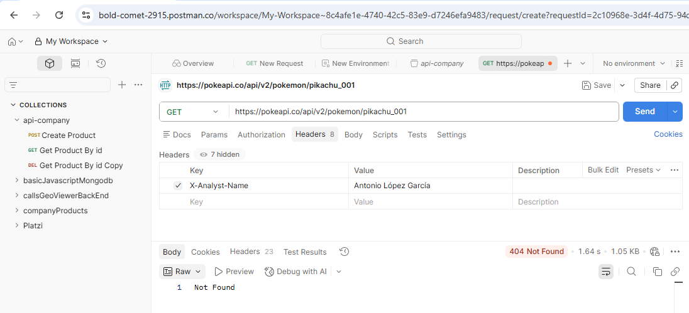
Lo importante aquí es entender que esto no es un fallo de internet ni del propio servidor; la comunicación ha funcionado perfectamente, pero el servidor nos está diciendo "no tengo lo que buscas".
En DataSphere, nuestro sistema tiene que estar preparado para estas situaciones. Si le pedimos datos externos sobre un huracán y recibimos un 404, nuestra aplicación no debe bloquearse. Simplemente debe tomar nota de que ese dato no está disponible y continuar trabajando con el siguiente, para no detener de golpe todo el análisis.
TAREA 4 — GIT STRATEGY + HISTORIAL
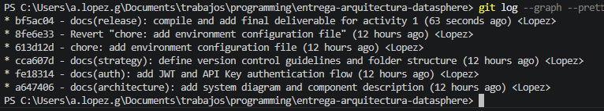
La gestión del control de versiones de este proyecto se ha ejecutado aplicando buenas prácticas y estándares profesionales. Tal y como refleja el árbol del historial adjunto, el flujo de trabajo se basa en los siguientes puntos:
Commits Atómicos y Semánticos: Se ha registrado en transacciones independientes utilizando Conventional Commits (por ejemplo, docs(architecture): add system diagram). Esto genera un historial predecible y fácil de auditar.
Se simuló la subida errónea de un archivo con información sensible y se solucionó aplicando el comando git revert. Esta práctica revierte los cambios de forma segura sin alterar ni destruir la historia previa del repositorio.
Se implementó un flujo de trabajo basado en ramas. Se creó una rama secundaria (main_dev_pro) donde se versionó el entregable definitivo de forma aislada. Posteriormente, este trabajo se integró en la rama principal (main) mediante un merge.
Solo tiene permisos de lectura.
usuario: user_read contraseña: 321
Tiene permisos para crear y borrar activos.
usuario: user_write contraseña: 123
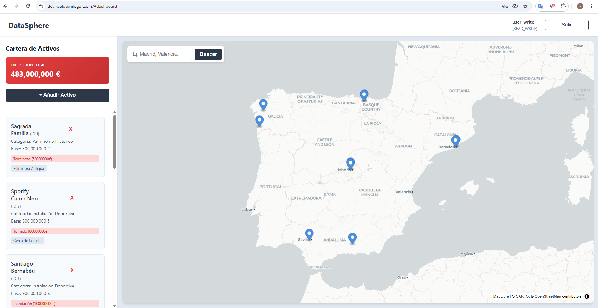
TAREA 1 — Modelado SQL
Enunciado:
Diseña e implementa un modelo relacional en una base de datos local que permita a DataSphere calcular la exposición al riesgo de sus activos frente a distintos peligros naturales. El modelo debe incluir al menos 4–5 tablas (como las que Viktor ha descrito: activos, categorías, peligros y la relación entre activos y peligros, más condiciones si lo consideras necesario), de forma que sea posible responder preguntas como:
“¿Cuál es el valor total expuesto ante un tipo de peligro concreto?”
“¿Qué activos están más expuestos a tornados en una región determinada?”
1. Captura del modelo (tablas y relaciones)
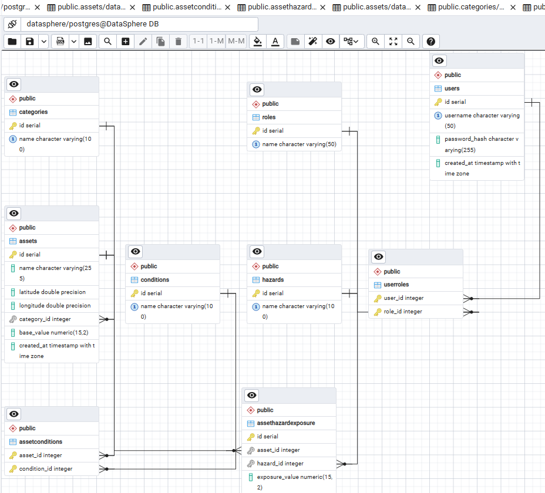
2. Captura de init.sql
Código SQL para estructurar la base de datos e insertar los datos iniciales:
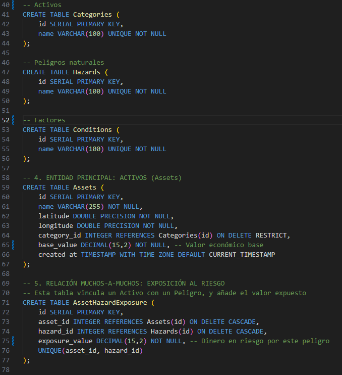
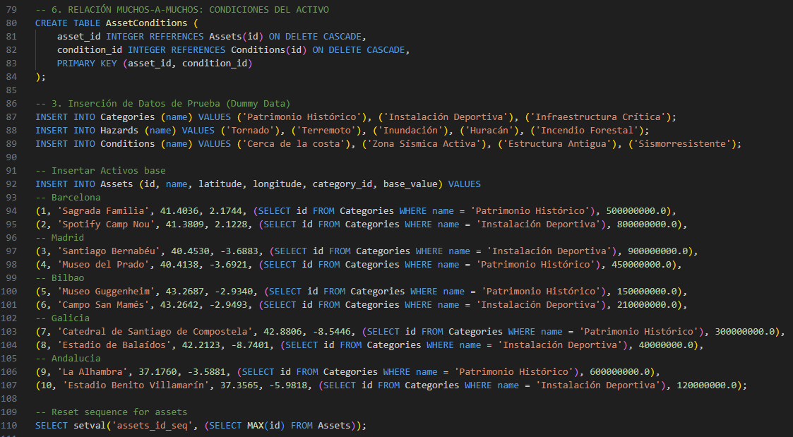
3. Registros en las tablas
Registros de 10 activos reales de España con valores económicos y vulnerabilidades específicas:
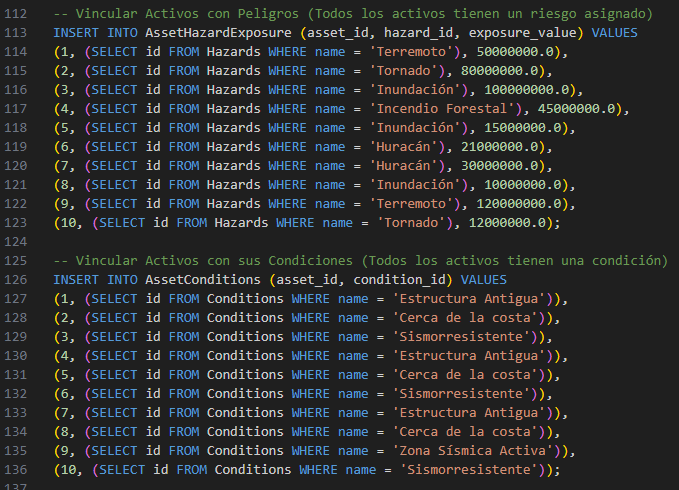
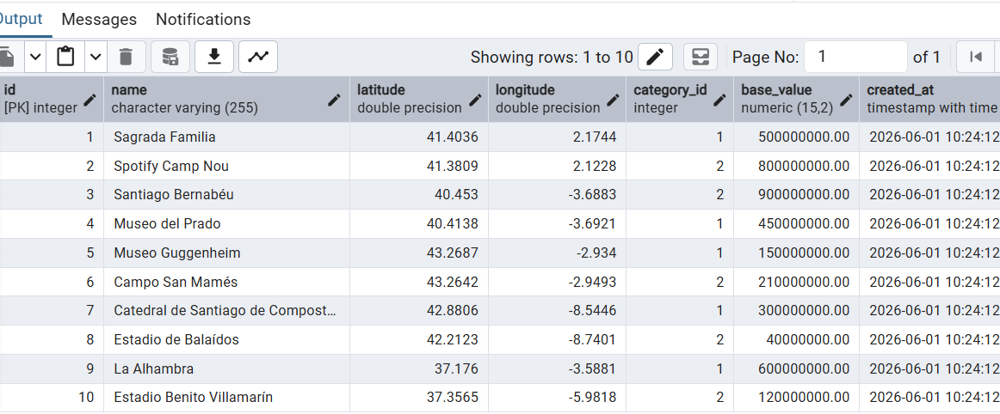
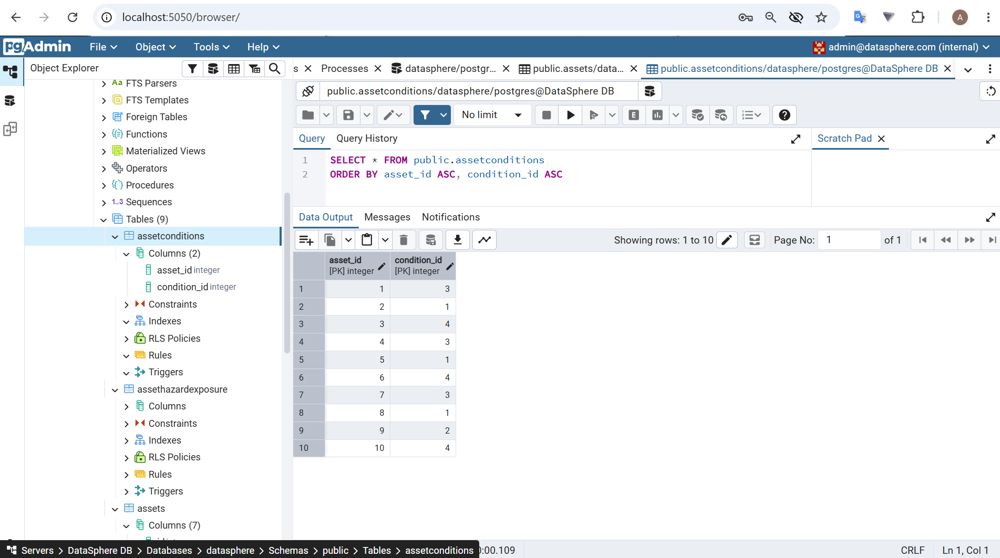
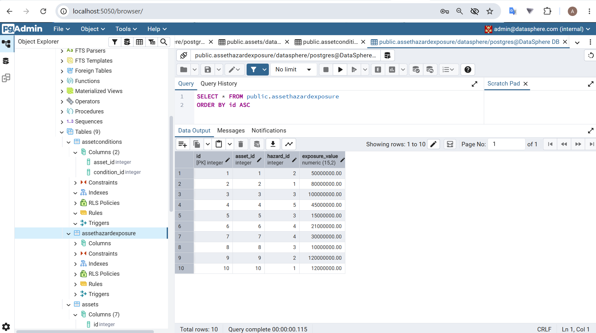
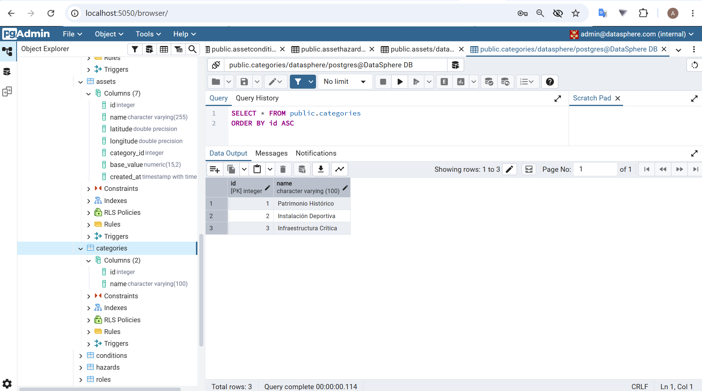
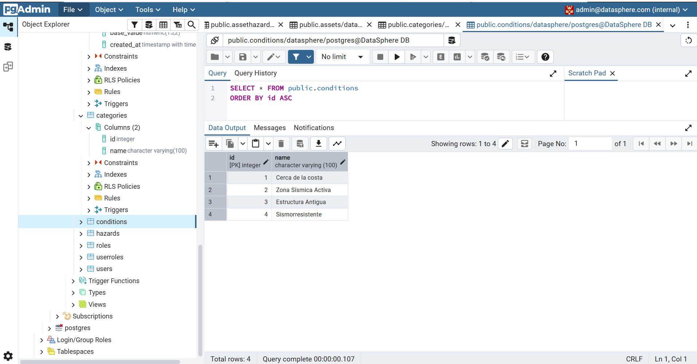
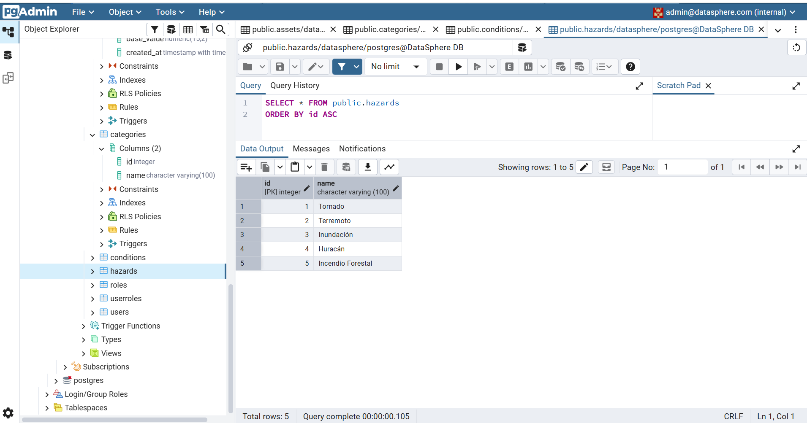
4. Justificación Técnica de las Decisiones de Modelado
A. Tipos de Datos: Decimal vs Float
DOUBLE PRECISION (Float) para Coordenadas: Las columnas latitude y longitude utilizan precisión de coma flotante porque es el estándar en GIS para posicionamiento espacial.
DECIMAL(15,2) para Valores Económicos: Para las columnas base_value y exposure_value (el dinero en riesgo), nunca se debe usar Float. Los procesadores aproximan los Floats, lo que puede causar errores en cálculos financieros. Se ha usado un numérico exacto de 15 dígitos y 2 decimales para asegurar una contabilidad estricta sin pérdidas de céntimos en agregaciones.
B. Tablas de Relación (Muchos a Muchos)
Se ha implementado la tabla puente AssetHazardExposure porque un activo puede estar expuesto a múltiples peligros a la vez, y un mismo peligro puede afectar a muchos activos.
C. Claves e Índices (Constraints)
Restricción Única (UNIQUE): En la tabla AssetHazardExposure hemos añadido una restricción explícita UNIQUE(asset_id, hazard_id). Esto garantiza que sea imposible asignar dos veces el mismo peligro natural al mismo activo.
Claves Foráneas (Foreign Keys) con Cascadas: Se ha aplicado ON DELETE CASCADE en las relaciones. Si en el futuro un administrador decide borrar un activo, automáticamente se borrarán también todos sus registros de exposición de riesgo huérfanos, manteniendo la base de datos limpia.
TAREA 2 — Construcción de la API CRUD de activos
Enunciado:
Construir una API REST mínima que permita gestionar activos del sistema (CRUD) y responder una consulta agregada de exposición. El diseño debe reflejar el uso profesional de una capa de acceso a datos mediante Repository Pattern + Unit of Work, y debe incluir 1–2 tests unitarios sencillos.
1. Código de los endpoints (AssetController)
Se ha implementado un controlador (AssetController.ts) que expone los endpoints requeridos para el CRUD básico y la consulta agregada, delegando toda la lógica de persistencia al UnitOfWork.
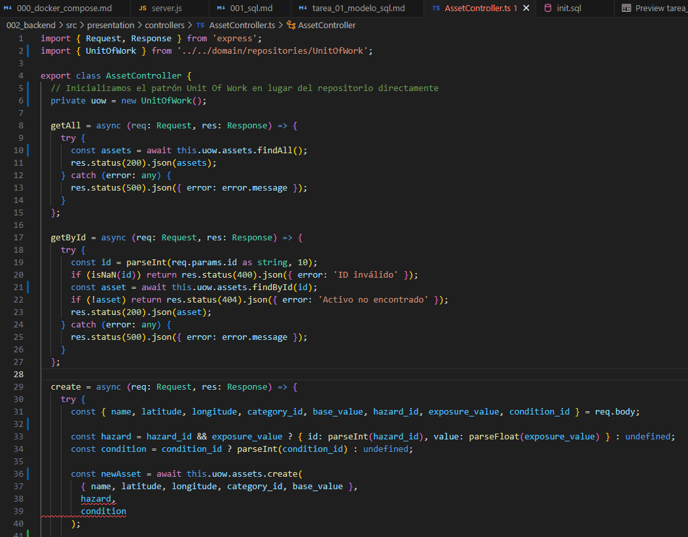
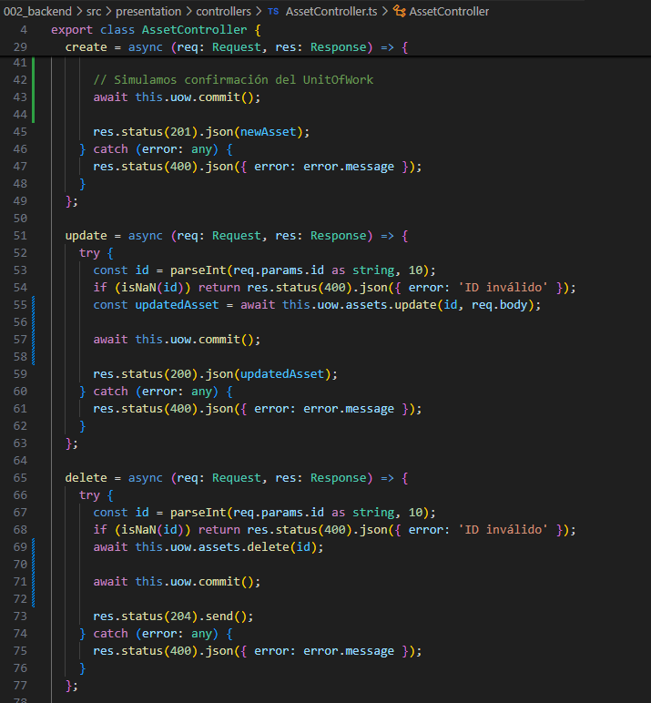
2. Patrón de Repositorio y Unit of Work
Para abstraer el acceso a datos y asegurar consistencia transaccional, se ha implementado el Repository Pattern junto con el Unit of Work.
Repository Pattern: Centraliza las consultas a la base de datos (mediante Prisma ORM), aislando la capa de presentación de la capa de datos.
Unit of Work: Actúa como coordinador, permitiendo agrupar múltiples operaciones transaccionales y asegurar que se completen atómicamente antes de hacer commit().
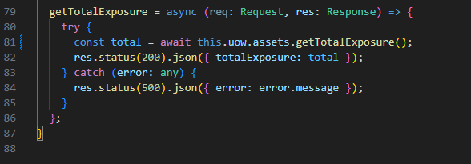
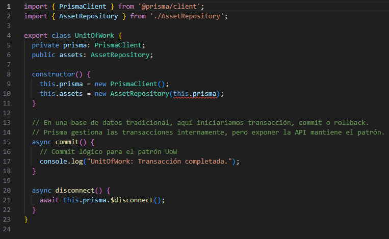
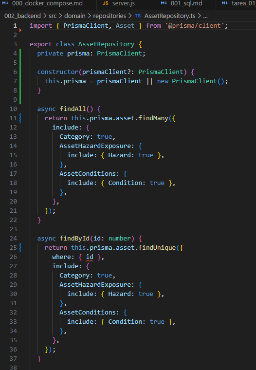
3. Pruebas Unitarias (Jest)
Se han desarrollado pruebas unitarias automatizadas (utilizando el entorno Jest con mocks) para validar de manera aislada la lógica del repositorio:
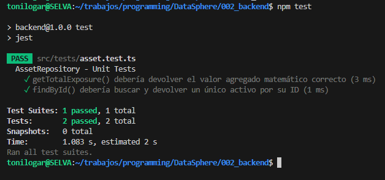
4. Pruebas de funcionamiento en Vivo (Postman)
Se demuestra su correcto funcionamiento en un entorno vivo mediante la creación de un nuevo activo (POST) y la consulta de activos (GET):
A. Operación CRUD: Creación de un activo (POST)
Petición a /api/assets devolviendo una respuesta HTTP 201 Created tras insertar correctamente un activo (ficticio) superando las validaciones del backend.
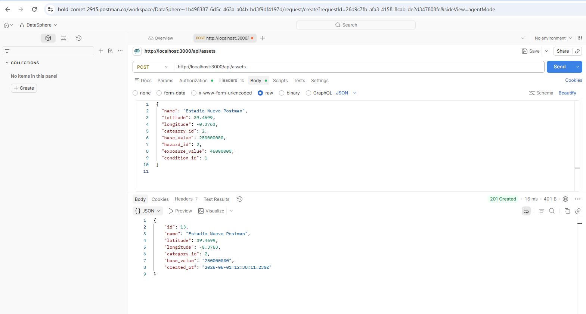
B. Consulta Agregada: Exposición Total (GET)
El endpoint /api/assets/total-exposure devuelve correctamente la suma de todos los valores de riesgo, delegando la agregación matemática directamente a nivel de base de datos para máxima eficiencia.
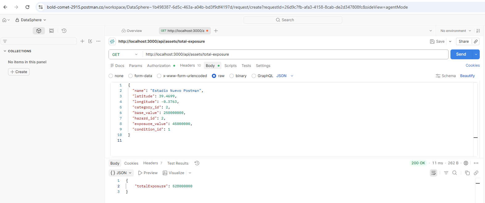
TAREA 3 — Seguridad aplicada
Enunciado:
Aplica autenticación y autorización a uno o más endpoints críticos, simulando la protección de información sensible dentro de DataSphere. Protege el endpoint con un rol específico (ej. RiskAnalyst) y demuestra con Postman una petición denegada seguida de una petición permitida.
1. Protección del Endpoint con JWT y Roles
Para proteger los valores económicos sensibles de la base de datos (como estipula el ingeniero de seguridad Samir), hemos implementado un middleware de autenticación por JWT (authenticateJWT) y un middleware de autorización estricta basada en roles (requireRole).
Específicamente, hemos restringido la creación, actualización y borrado de activos al rol especializado RiskAnalyst. El código en nuestro enrutador (asset.routes.ts) ha sido blindado de la siguiente manera:
// Rutas protegidas con alta seguridad para operaciones de escritura
router.get('/', assetController.getAll);
router.post('/', requireRole('RiskAnalyst'), assetController.create);
router.get('/:id', assetController.getById);
router.put('/:id', requireRole('RiskAnalyst'), assetController.update);
router.delete('/:id', requireRole('RiskAnalyst'), assetController.delete);
2. Demostración del flujo de seguridad (Postman)
A continuación se demuestra el funcionamiento real de esta capa de seguridad en la API mediante dos peticiones consecutivas al endpoint protegido POST /api/assets.
A. Petición Denegada (403 Forbidden)
Se intenta insertar un activo utilizando un token JWT estructuralmente válido, pero que pertenece a un usuario que no tiene el rol de RiskAnalyst (un usuario estándar). La API bloquea la transacción instantáneamente por seguridad y devuelve el error de permisos insuficientes.
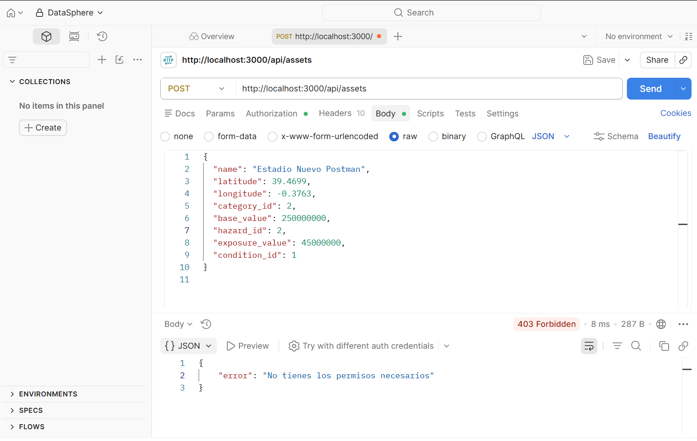
B. Petición Permitida (201 Created)
Tras iniciar sesión con un usuario que sí posee el rol de RiskAnalyst, el sistema expide un nuevo JWT con los "claims" autorizados. Al inyectar este nuevo token en las cabeceras (Bearer Token), el middleware aprueba la validación y permite la ejecución del controlador. El activo se registra exitosamente.
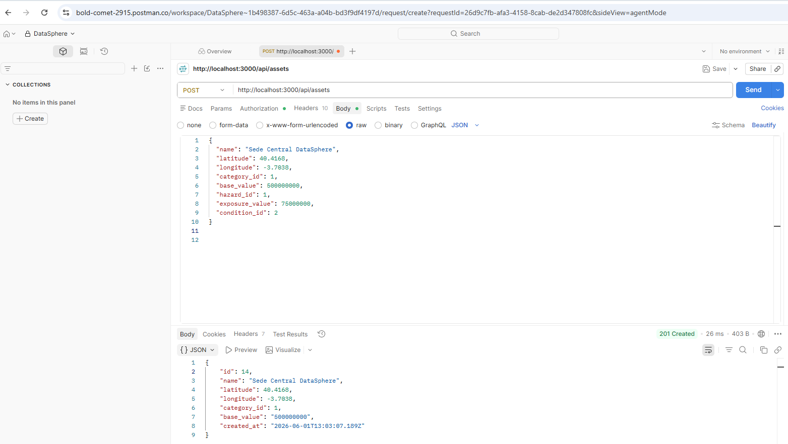
TAREA 4 — Git Strategy corporativa y ciclo de despliegue
Enunciado:
Diseñar una estrategia de ramas en Git que permita a varios desarrolladores trabajar en paralelo, integrar cambios de forma controlada y realizar despliegues mensuales de la aplicación.
1. Diagrama de la Estrategia Git
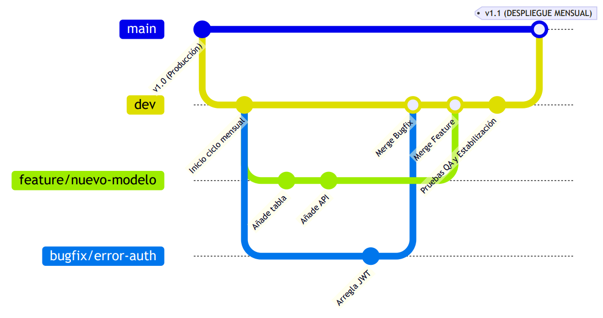
2. Explicación del Flujo de Trabajo
Este flujo de trabajo se basa en un modelo de ramas tipo GitFlow simplificado, ideal para equipos que requieren un entorno de pruebas compartido y despliegues programados en fechas concretas.
Dónde trabajan los desarrolladores: Nunca se trabaja directamente sobre main ni dev. Cuando un programador recibe una tarea, crea una rama efímera basada en dev (por ejemplo, feature/nuevo-modelo para una nueva funcionalidad, o bugfix/error-auth para solucionar un error urgente de código). Aquí es donde ocurre la programación en paralelo sin bloquear a los demás compañeros.
Dónde se integran los cambios: Una vez finalizada la tarea, el código no se empuja directamente. El desarrollador abre un Pull Request (PR) hacia la rama dev. Esto permite que otros miembros del equipo revisen el código (Code Review). Si todo es correcto, se acepta el PR y el código se fusiona (merge) de vuelta hacia la rama dev. La rama dev actúa como un entorno de Integración Continua (CI), donde se junta el código de todos los miembros del equipo y se realizan las pruebas internas.
Cuándo se libera una versión estable y qué ocurre con main: Al finalizar el ciclo de 30 días, se fusiona el código estabilizado de dev hacia la rama main. En ese instante se genera un "Tag" (etiqueta de versión, ej. v1.1), lo que acciona el sistema automático para enviar el código a los servidores en vivo.
3. Relación con el Despliegue Mensual
Cuándo se decide cerrar una versión: Se produce un "Code Freeze" a final de mes. Todo el código que haya logrado ser integrado y probado en dev para esa fecha formará parte de la nueva versión. Lo que no esté terminado se quedará en su rama feature/ esperando al ciclo del mes siguiente.
Qué rama se considera "lista para producción": La rama main es estrictamente un reflejo del código que están usando los clientes reales. Todo lo que entra a main se considera 100% probado y listo.
Por qué este modelo facilita los despliegues controlados: Al separar main de dev, el equipo puede seguir programando el Día 1 del mes siguiente sin miedo a romper el servidor de producción. Toda la inestabilidad propia del desarrollo ocurre lejos de los clientes, garantizando una liberación mensual segura y sin estrés.
En esta actividad, se ha simulado la ingesta automatizada de datos (ETL) y se ha aplicado el patrón de diseño CQRS en el backend.
Se ha diseñado e implementado un contenedor independiente (010_etl_worker) encargado de simular el proceso de extracción, transformación y carga mediante llamadas Service-to-Service protegidas por API Keys. En el backend, se ha separado estrictamente la lógica de escritura (comandos) de la de lectura (consultas).
Tarea 1: Diseño del Flujo ETL (Extract, Transform, Load)
Para la automatización de la recolección de datos, se ha desplegado un Worker programado con Cron en un contenedor Docker independiente (010_etl_worker). En un entorno de producción real, este worker se conectaría a APIs meteorológicas o sísmicas (ej. OpenWeather). En este caso simulamos el proceso ETL leyendo dos ficheros .txt.
Fase 1: Extract (Datos Ficticios)
Se han generado los siguientes archivos en la ruta 010_etl_worker/data/:
Una vez leídos los archivos en memoria, el Worker aplica el ETL:
Filtra y descarta cualquier peligro con una severidad inferior a 3.
Calcula el RiskScore multiplicando SeverityLevel * ProbabilityScore.
Se añade dinámicamente la fecha y hora de ejecución al nombre del activo (ej: "Sede Central - 2026-06-07 19:15").
Un Cron Job se ejecuta cada 15 minutos entre las 19:00 y las 19:59 de forma autónoma.
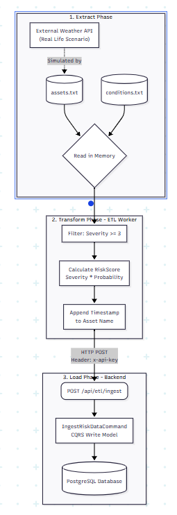
Tarea 2: Comando de Ingestión de Datos (Command - CQRS)
El script del ETL realiza el cálculo del RiskScore y envía los datos transformados a un nuevo endpoint en el backend protegido.
En el backend, el archivo IngestRiskDataCommand.ts recibe esta información y, mediante una transacción controlada de Prisma, asegura la integridad de los datos en la base de datos PostgreSQL, insertando en las tablas Asset, Hazard y AssetHazardExposure.
La lógica de lectura ha sido separada totalmente. Para responder a preguntas de negocio como "¿Cuáles son los activos con mayor riesgo de exposición?" hemos creado GetHighRiskAssetsQuery.ts.
Esta query utiliza directamente a la base de datos pidiendo únicamente los campos necesarios y filtrando activos con un valor de exposición superior a un límite crítico (ej: > 10.000.000).
Código Relevante: GetHighRiskAssetsQuery.ts
import { PrismaClient } from '@prisma/client';
export class GetHighRiskAssetsQuery {
private prisma: PrismaClient;
constructor(prisma: PrismaClient) {
this.prisma = prisma;
}
// CQRS QUERY: Solo lee datos de forma optimizada, no modifica estado
async execute() {
console.log("[Query] Obteniendo activos con alto riesgo de exposición");
// Una consulta compleja para analistas, ejecutada directamente sobre la base de datos
const highRiskAssets = await this.prisma.asset.findMany({
where: {
AssetHazardExposure: {
some: {
// Filtrar activos que tengan alguna exposición mayor a 10 millones
exposure_value: { gt: 10000000 }
}
}
},
include: {
AssetHazardExposure: {
include: {
Hazard: true
}
}
},
orderBy: {
base_value: 'desc'
},
// Optimización de lectura: solo cogemos los primeros 50
take: 50
});
// Proyectar a un DTO limpio para la vista
return highRiskAssets.map(asset => ({
assetId: asset.id,
name: asset.name,
value: Number(asset.base_value),
criticalExposures: asset.AssetHazardExposure
.filter(exp => Number(exp.exposure_value) > 10000000)
.map(exp => ({
hazard: exp.Hazard.name,
riskCost: Number(exp.exposure_value)
}))
}));
}
}
Prueba de los Endpoints de Lectura
Para probar que ambas Queries CQRS funcionan correctamente en nuestro servidor de producción:
1. Test Query A (Alto Riesgo):
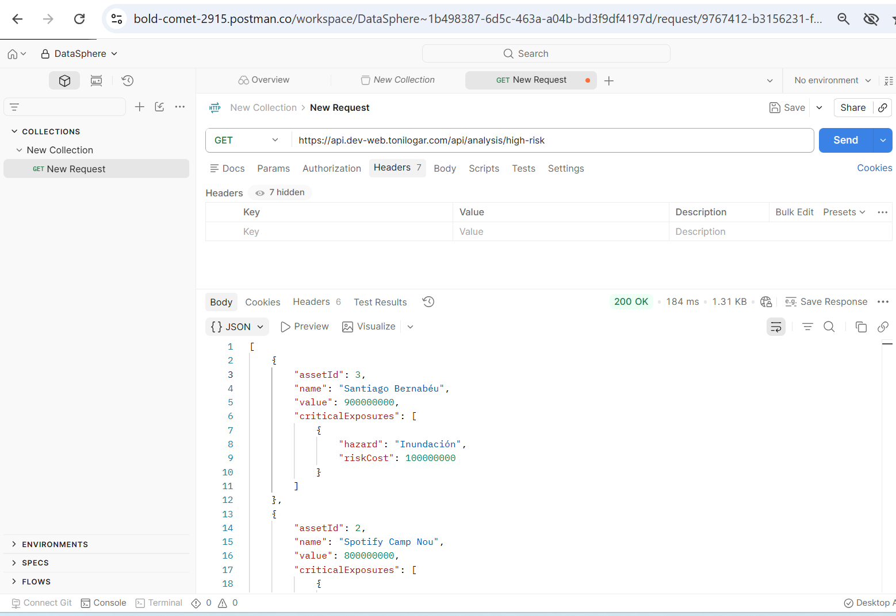
import { PrismaClient } from '@prisma/client';
export class GetTotalValueExposedByHazardQuery {
private prisma: PrismaClient;
constructor(prisma: PrismaClient) {
this.prisma = prisma;
}
// CQRS QUERY: Solo lee datos de forma optimizada, no modifica estado
async execute() {
console.log("[Query] Calculando valor total expuesto agrupado por peligro");
// (Query SQL nativa de agrupación)
const exposures = await this.prisma.assetHazardExposure.groupBy({
by: ['hazard_id'],
_sum: {
exposure_value: true,
},
orderBy: {
_sum: {
exposure_value: 'desc'
}
}
});
const hazards = await this.prisma.hazard.findMany();
// Proyectar limpio
return exposures.map(exp => {
const hazardName = hazards.find(h => h.id === exp.hazard_id)?.name || 'Unknown';
return {
hazard: hazardName,
totalExposedValue: exp._sum.exposure_value ? Number(exp._sum.exposure_value) : 0
};
});
}
}
2. Test Query B (Valor Total Expuesto):
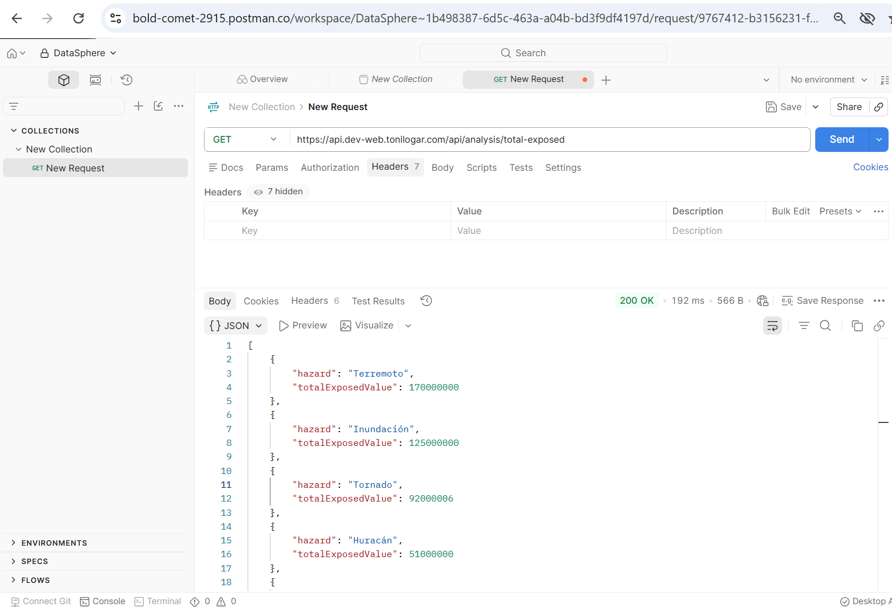
Tarea 4: Autenticación Servicio a Servicio (API Keys)
Al separar la plataforma en dos contenedores (Backend y ETL Worker), se hacía necesario proteger el endpoint de ingesta contra peticiones externas maliciosas, ya que este endpoint no usa tokens JWT de un usuario, sino comunicación "Machine to Machine" (M2M).
Implementando un middleware específico en Express (apiKeyAuth.ts) que comprueba que la cabecera x-api-key contenga un token pre-compartido de forma segura a través de las variables de entorno de Docker Compose.
Código Relevante: Middleware apiKeyAuth.ts
import { Request, Response, NextFunction } from 'express';
const API_KEY_HEADER = 'x-api-key';
const EXPECTED_API_KEY = process.env.ETL_API_KEY || 'default-secret-key';
export const apiKeyAuth = (req: Request, res: Response, next: NextFunction) => {
const apiKey = req.header(API_KEY_HEADER);
if (!apiKey) {
return res.status(401).json({ error: 'Falta la API Key en las cabeceras (x-api-key).' });
}
if (apiKey !== EXPECTED_API_KEY) {
return res.status(403).json({ error: 'API Key inválida. Acceso denegado.' });
}
// Si la clave es correcta, pasa al siguiente middleware/controlador
next();
};
Pruebas de Seguridad en Postman
1. Intento sin API Key (Acceso Denegado)
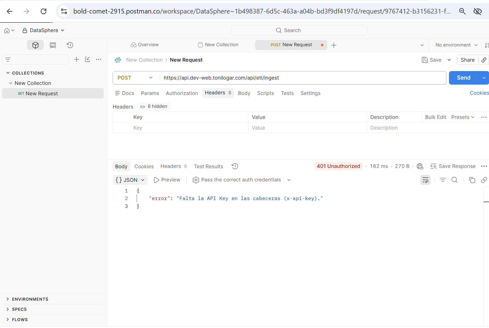
2. Ingesta Correcta con API Key
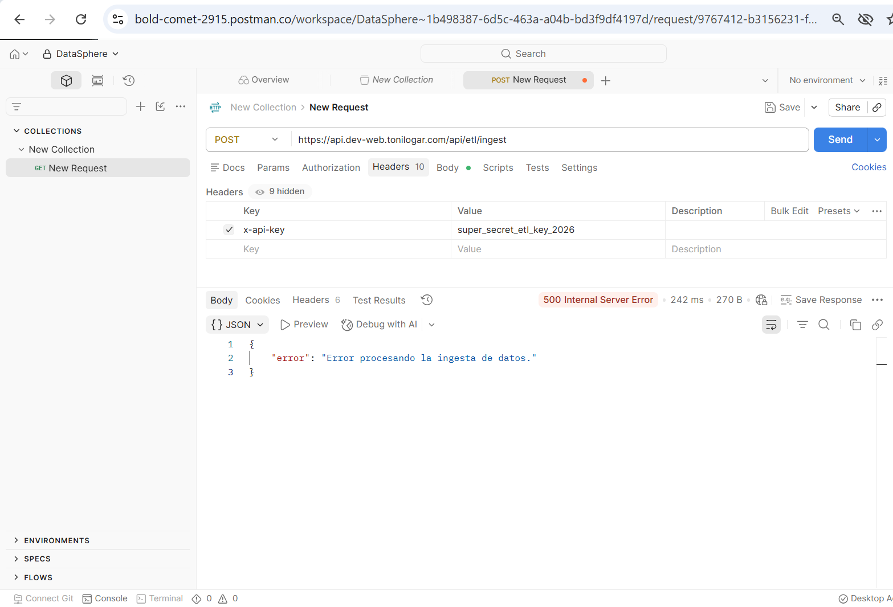
Conclusión
El diseño de una arquitectura orientada a microservicios con un orquestador Docker nos ha permitido aislar el trabajo pesado de transformación de datos (ETL) en un entorno seguro y cronometrado. Al aplicar CQRS, hemos garantizado que las ráfagas de lectura que harán los analistas para ver los activos en peligro no bloqueen la base de datos ni los modelos de escritura de la ingesta de datos. Finalmente, asegurar el perímetro M2M con API Keys asienta unas bases fundamentales de DataOps y Ciberseguridad en arquitecturas distribuidas.
Para la realización de las 4 actividades he creado una aplicación web que permite gestionar los activos de una empresa y sus riesgos asociados. La aplicación está dividida en 4 módulos:
Frontend: Interfaz de usuario interactiva.
Backend: Servidor API REST.
ETL Worker: Servicio en segundo plano para la ingesta automatizada de datos.
Base de Datos: Sistema gestor de base de datos relacional.
La he alojado dentro de mi web construida con docker compose. En la web aprovecho para mostrar y aprender sobre desarrollo de software gis devops etc.. https://tonilogar.com/
El frontend se ha construido utilizando Svelte con VITE para manejar la reactividad de los elementos del frontend. El objetivo principal ha sido consumir los datos de la API (Backend) e interactuar con ellos.
1.1 Filtrado Reactivo (Client-Side)
He implementado un sistema de filtrado en cliente.
Al arrancar la aplicación (Dashboard.svelte), se obtiene el listado completo de activos con una única llamada a la API:
let assets: any[] = [];
// Variable reactiva para almacenar el hazard seleccionado
let selectedHazardId: number = 0;
// Filtra dinámicamente sin mutar el array original ni recargar
$: filteredAssets = selectedHazardId === 0
? assets
: assets.filter(a => a.AssetHazardExposure?.some((exp: any) => exp.hazard_id === selectedHazardId || exp.Hazard?.id === selectedHazardId));
1.2 El Mapa (MapLibre)
Para la visualización de los activos he utilizado la librería MapLibre. El componente del mapa recibe el array filteredAssets. Cuando Svelte detecta que el usuario cambia el selector de peligro, la variable filteredAssets se actualiza instantáneamente y muestra solo los que cumplen el filtro.
1.3 Variables de Entorno
En este proyecto se usan ficheros .env para configurar variables tanto en desarrollo como en producción.
.env.development
.env.production
Cuando se levanta la herramienta con docker-compose en local, se utilizan las variables de .env.development. Cuando se hace un push, se utilizan las variables de .env.production alojadas en GitHub Secrets para el despliegue automático.
# Entorno de Producción (Hetzner VPS) - CI/CD
# Estas variables serán leídas nativamente por /docker-compose.yml al orquestar Traefik.
DOMAIN_NAME=tonilogar.com
TRAEFIK_HTTP_PORT=80
SENTINEL_URL=https://sentinel.tonilogar.com/
CASSINI_URL=https://cassini.tonilogar.com/
DEV_WEB_URL=https://dev-web.tonilogar.com/
DEV_WEB_API_URL=https://api.dev-web.tonilogar.com
ETL_API_KEY=xxxxxxxxxxxxxxxxx
Tarea 2: Dockerización de DataSphere
Para preparar la aplicación para producción, el frontend no se puede servir simplemente con el servidor de desarrollo (npm run dev). Es necesario construir una imagen estática y servirla de forma eficiente.
Para ello, se utiliza un Dockerfile Multi-Stage (Multietapa):
# Etapa 1: Build (Node.js)
FROM node:18-alpine AS builder
WORKDIR /app
COPY package*.json ./
RUN npm install
COPY . .
# Se inyecta la URL de la API mediante argumentos de build
ARG VITE_API_URL
ENV VITE_API_URL=$VITE_API_URL
# Se compila el código (HTML, CSS, JS minificado en la carpeta /dist)
RUN npm run build
# Etapa 2: Producción con Nginx
FROM nginx:alpine
# Copiar configuración personalizada para SPA (Single Page Applications)
COPY nginx.conf /etc/nginx/conf.d/default.conf
# Copiar los archivos estáticos generados en la etapa anterior
COPY --from=builder /app/dist /usr/share/nginx/html
EXPOSE 80
CMD ["nginx", "-g", "daemon off;"]
Ventajas de este enfoque:
Seguridad y Peso: La imagen final solo contiene Nginx y archivos estáticos. No hay rastro de Node.js, npm, ni del código fuente original. Esto hace que la imagen pese unos pocos megabytes.
Eficiencia: Nginx está optimizado para servir archivos estáticos (.html, .js, .css).
Tarea 3: Despliegue en la Nube y Arquitectura Global
3.1 Proceso de Despliegue en la Nube (Práctica Real con CI/CD)
En lugar de un despliegue manual teórico, el proyecto DataSphere se despliega de forma totalmente automatizada en un VPS de Hetzner mediante flujos de Integración y Despliegue Continuo (CI/CD) utilizando GitHub Actions.
La infraestructura global gestiona el ciclo de vida completo de la aplicación:
Aprovisionamiento como Código (IaC): La infraestructura del servidor en Hetzner está construida con Terraform, parametrizando todas las variables posibles a través del fichero .env.development (como el tipo de máquina TF_VAR_server_type o el sistema operativo TF_VAR_image). Terraform se encarga de aprovisionar la máquina física, instalar Ubuntu, asignar una IP pública fija y blindar el acceso configurando claves criptográficas SSH, permitiendo una conexión M2M (Machine to Machine) segura.
Repositorio y Secretos: El código fuente está en GitHub. Las variables de producción (.env.production como DEV_WEB_DB_URL, ETL_API_KEY) no se suben al código, sino que están en GitHub Secrets (ej. PROD_ENV_FILE, VPS_IP, VPS_SSH_KEY).
Pipeline de CI/CD (GitHub Actions):
A través del fichero de workflow production-deploy.yml, se define un proceso que se dispara automáticamente con cada push hacia las ramas main o main_dev_pro.
Cuando GitHub Actions detecta el push, se conecta vía SSH al servidor de Hetzner usando las claves guardadas en los Secrets.
Transfiere el código actualizado descartando ficheros innecesarios según .gitignore.
Docker se encarga de recompilar el Frontend (con su multi-stage build), el Backend y el Worker, reiniciando los servicios de manera controlada sin intervención manual.
Orquestación, Enrutamiento y SSL (Traefik): Dentro del VPS, Traefik actúa como el único punto de entrada público (Reverse Proxy). Enrutando las peticiones, Traefik se comunica automáticamente con Let's Encrypt para solicitar, generar y renovar certificados SSL Wildcard (ej. *.tonilogar.com). Esto garantiza que cualquier subdominio tenga HTTPS de forma totalmente autónoma.
3.2 Diagrama de Arquitectura Global
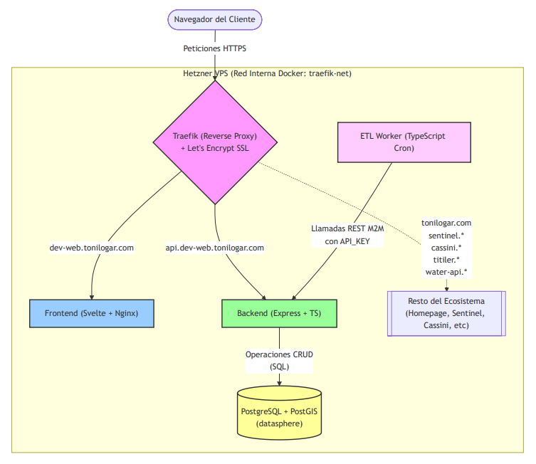
El ecosistema completo se comunica de la siguiente manera:
Navegador del Cliente: El usuario accede a la web pública. Peticiones seguras (HTTPS)
Traefik (Reverse Proxy): Recibe todo el tráfico externo en el VPS, resuelve el cifrado SSL y enruta la petición hacia la red privada de contenedores. Red Interna Docker
Backend Express (API REST): Contenedor Node.js/TypeScript que procesa las peticiones de los usuarios, gestiona las operaciones CQRS y protege el acceso a la base de datos. Consultas SQL (Prisma ORM)
Base de Datos PostgreSQL + PostGIS: Contenedor maestro que centraliza toda la persistencia de datos (Activos, Peligros, Exposición). Llamadas M2M seguras (API Keys)
ETL TypeScript Worker: Contenedor independiente ejecutando un Cron Job (node-cron con TypeScript). Lee datos crudos, los transforma y los inyecta periódicamente llamando al Backend.